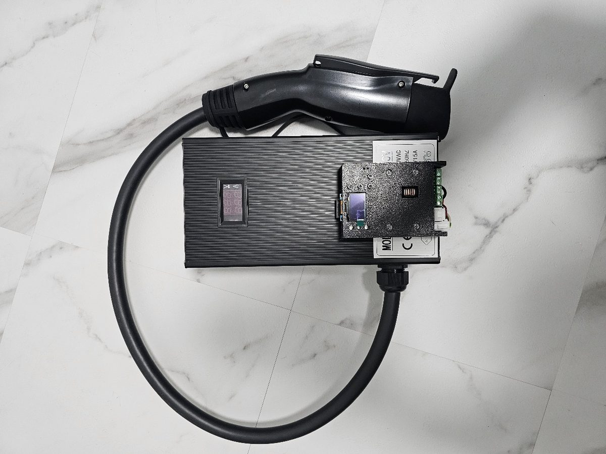
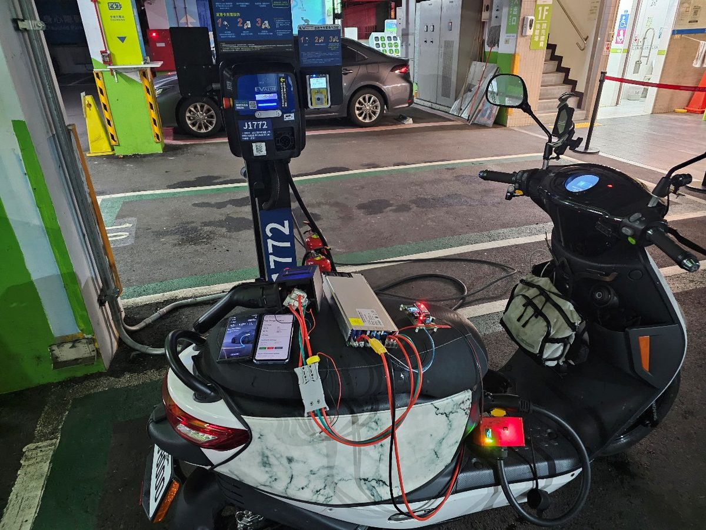

研究中與暫停販售
下面兩樣目前都沒有在賣，寫出來是讓大家知道做得到什麼。
1.5 kW / 15 A 全副廠充電器
從控制板、主電源到充電槍，完全不使用原廠零件的 iE125 充電器：控制板與電源是我自己開發的，充電槍是副廠訂做，和原廠充電器一樣經過 TES 規格的充電交握。這組的充電槍線徑其實用到 30 A 都沒問題，15 A 是我刻意設的上限，原因在插座：
- 一般 110V 插座的容量上限是 1650 W
- 電源本身有轉換損耗，輸出 1.5 kW 時，插座端吃的電已經貼近這個上限
- 老舊的電線和插座長時間用到這麼滿，本身就有風險
這組曾經上架販售，但定位比較尷尬：在家充電可以慢慢充，用不到這麼大的功率；帶出門或臨時有急用，又不夠快。加上副廠充電槍取得不易、成本壓不下來，目前暫停販售（賣場顯示缺貨），現在是家人在日常使用。
如果之後能找到穩定的充電槍來源，也把成本壓下來，不排除降價後重新上架。

6 kW 直流快充研究平台
用我的控制板搭配工業整流模組以及副廠充電槍組成，iE125 實測 6 kW / 66 A，0→80% 約 30 分鐘，可以轉接汽車的 AC 慢充樁充電。

但我不販售整套直流快充系統。我不認為它目前安全到可以讓一般人買回去使用，也還沒有一個我願意交出去的成熟方案。現階段的做法是：懂的人買控制板回去，自行搭配、自行組裝、自行負責。
我不做「暴力改裝」
有一種做法是繞過車輛的充電接口，直接把電打進電池。常見的形式是打開原廠電池的外殼，從電池拉出一條並聯線，再用外接充電器從這條線直接充電；有些還會順便並聯一組增程電池。
另一種形式看起來比較像正常充電：在電池組內加跳線，把原本要等交握完成才會接通的充電迴路直接短路，讓車上的 TES 充電座一直接著電池，再插上一般的定電壓充電器就開始充。充電槍是插在充電座上沒錯，但一樣沒有經過交握。
會這樣繞，是因為要從車上的 TES 接口充電，充電器必須先透過 CAN Bus 和車輛的 BMS 完成 TES-0D-02-01 規定的充電交握，車輛才會打開充電迴路；交握做不出來，就只剩下繞過接口、直接接電池這條路。這些做法我不做，原因有五個：
- 電池管理系統（BMS）完全沒有參與這次充電，電流、溫度、單體電壓的保護邏輯等於被關掉了。
- 沒有停止機制。充飽了誰來斷？
- 如果還並聯了增程電池，那組電池不在原車 BMS 的管理範圍內，車輛不知道它存在。
- 要打開電池外殼，車輛端也一看就知道，保固直接沒了；而多數車友的電池是租的。
- 把充電迴路短路的做法，會讓充電座的金屬腳一直帶著電池電壓（約 100 V）。原廠設計讓充電座平常不帶電，就是怕手指、雨水或掉進去的金屬碰到時觸電或短路。
怎麼分辨：走正規交握的充電，插上槍之後要等幾秒，車子交握完成、接觸器「喀」一聲接通才開始輸出，儀表也會顯示充電中。插上去充電器立刻就有輸出、車子儀表卻沒有任何反應的，就是繞過交握直接接電池。
完整說明：TES 快充座充電安全與分辨方法。
我的控制板走的是反方向：把這套交握完整做出來，整個充電過程要多少電壓、多少電流、什麼時候該停，都是車輛自己的 BMS 在決定，控制板只負責忠實地跟隨它的要求。